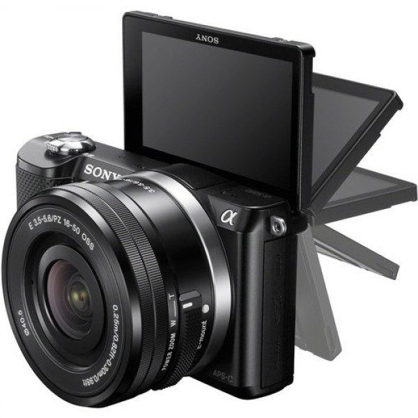

LEICA M TYP 240
Đến với TECH DIGITAL bạn sẽ hài lòng với chất lượng sản phẩm và dịch vụ bán hàng.
- Hỗ trợ bán trả góp
- Hỗ trợ Bán trả góp
- Miễn phí dán màn hình máy ảnh trọn đời máy.
- Miễn phí vệ sinh ngoài máy ảnh, ống kính trọn đời máy.
- Giao hàng thanh toán tận nơi từ 1 đến 5 ngày.
- Nhận thanh toán COD và Ship hàng toàn quốc.
- Áp dụng mọi hình thức thanh toán: Tiền mặt, Chuyển khoản, Cà thẻ (Mastercard, Visa, tất cả các thẻ ATM nội địa).
- Hổ trợ thu mua trao đổi sản phẩm ngành ảnh với giá tốt nhất.


Giới thiệu sản phẩm
- Leica Q Titanium không khác nhiều so với Leica Q phiên bản thường. Những đường cong trên thân máy có cảm giác mượt mà hơn khi khoác lên màu sơn mới.
- Một sự khác biệt nhỏ đi cùng với phiên bản này đó là dây đeo . Dây đeo mới mang nét hiện đại và phá cách so với sợi dây da vốn có của tất cả các dong Leica trước đây.
Tính năng nổi bật: Leica Q Titanium Gray
+ Cảm biến CMOS Full-frame 24 MP
+ Chip xử lý ảnh Maestro II
+ Hệ thống lấy nét tự động nhanh nhất trong các máy compact
+ ISO 100 - ISO 50000
+ Có chế độ Crop 35 mm và 50 mm
+ Màn hình cảm ứng 3, độ phân giải 1,04 triệu điểm ảnh
+ Ống ngắm điện tử EVF độ phân giải cao nhất thế giới 3.68 MP
+ Live view, focus peaking để hỗ trợ lấy nét tay
Leica là thương hiệu máy ảnh cực kì nổi tiếng nhờ những sản phẩm thuộc dòng siêu cấp. Chúng thương được trang bị những công nghệ phần cứng và phần mềm tối tân, đem lại trải nghiệm chụp thế nào cũng đẹp và đi kèm là mức giá mà ai cũng phải suýt xoa.
Leica Q Titanium Gray là một trong số đó. Mẫu máy ảnh này là phiên bản vỏ màu xám của Leica Q, ra mắt sau một thời gian và mức giá cũng tăng lên một chút. Phần còn lại của hai thiết bị đều là tương đồng, nên nếu bạn đã được trải nghiệm chiếc Leica Q original thì sẽ biết rõ trải nghiệm chụp hình trên bản Titanium Gray là như thế nào.
Dòng Leica Q được phát triển để (phần nào) hợp nhất những chiếc máy ảnh chuyên nghiệp với máy ảnh du lịch với thiết kế gọn gàng, lược bớt vài tính năng mà vẫn cho chất lượng ảnh vượt trội. Điểm nổi bật nhất của Leica Q có thể nói tới cảm biến ảnh fullframe độ phân giải 24MP, hỗ trợ ISO lên tới 50.000 và đi kèm ống kính Summilux 28mm F1.7. Ống kính này là loại cố định, đi kèm chống rung quang học và không thể tháo rời khỏi thân máy.

Máy được trang bị những thành phần cơ bản nhất để có thể dễ dàng sử dụng tương tự như nhiều sản phẩm khác của Leica, từ vòng xoay chỉnh tốc, chỉnh EV, phím quay phim, cổng hotshoe trên đỉnh, phím điều hướng 5 chiều, 1 dãy phím menu đa năng ở lưng và màn hình cảm ứng điện dung đa điểm kích thước 3 inch, độ phân giải cao. Ngay phía trên dãy phím đa năng là một ống ngắm điện tử độ phân giải lên tới 3.68 triệu điểm ảnh, tự động kích hoạt khi đưa mắt vào nhờ cảm biến tiệm cận bên cạnh và cũng có vòng xoay để chỉnh tiêu cự cho những ai bị cận.
Về phần ống kính, có thể nói đây là thành phần quan trọng nhất góp phần tạo nên thương hiệu Leica và chất lượng ảnh của chiếc Leica Q. Có kích thước khá nhỏ gọn nhưng ống kính Summilux này chứa trên mình tới 3 vòng xoay điều khiển. Tính từ phần thân máy ra thì chúng lần lượt để chỉnh chế độ lấy nét thường/Macro, khoảng nét và khẩu độ.
Vòng xoay lấy nét có đi kèm một cục nhựa nhỏ giúp người dùng xoay chuyển dễ dàng hơn. Trên cục này còn có một nút nhỏ để chút ta bấm vào và xoay sang chế độ lấy nét tự động. Vì vòng xoay này trơn nên sẽ không tạo ra tiếng động hay bị rung trong quá trình lấy nét, giúp chúng ta có những thước phim với âm thanh tốt hơn.

Cuối cùng là vòng xoay lá khẩu. Đây là loại vòng xoay điện tử, không trực tiếp thay đổ khẩu ngay khi xoay mà chỉ có tác dụng khi bấm chụp, đồng thời cũng không hoạt động theo ý muốn trong chế độ quay video. Mặt dưới, Leica Q Titanium Gray có lỗ chứa pin và thẻ nhớ SD. Viên pin dung lượng 1200mAh có thể tháo ra sạc bằng củ sạc có sẵn trong hộp. Cạnh phải chứa chip NFC để kết nối nhanh với smartphone, cạnh trái có cổng HMDI và Micro-USB để truyền dữ liệu nằm dưới nắp che bằng nhựa. Vi có mức giá cao nên trải nghiệp mở hộp của Leica Q Titanium Gray cũng rất ấn tượng. Hộp đựng được làm nhiều ngăn, mỗi ngăn chứa vài món đồ như phụ kiện, dây đeo, cáp sạc và sách HDSD. Riêng thân máy và nắp đậy ống kinh được để riêng trong một hộp màu xám phía trên với đệm xốp ở trên và dưới để chống va chạm trong quá trình vận chuyển.